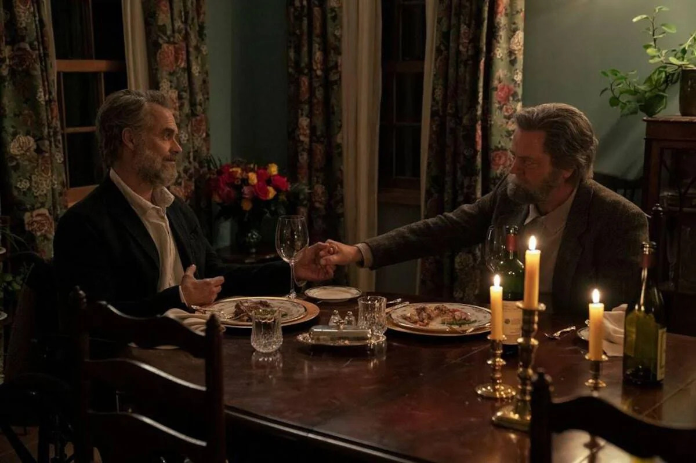
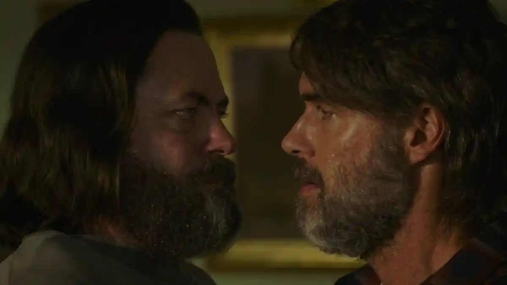
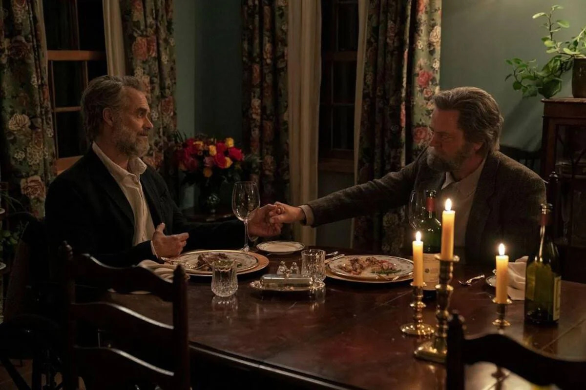
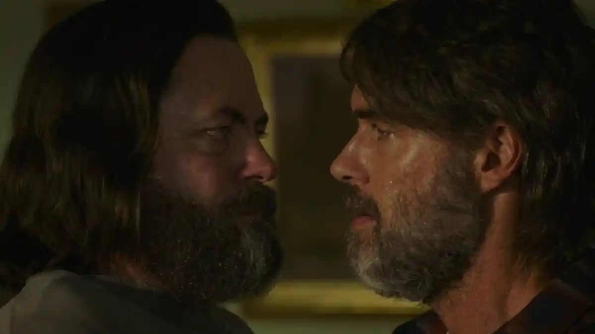

Why do people tell stories?
What do these stories tell us about our world?
Gary Shen - Capstone Project
Lit & Comp I 24-25
My Thesis
We tell stories to explore the full spectrum of human nature
—from the dangers of selfishness and savagery to the redemptive strength of relationships and love,
revealing how mutual trust shape our ability to endure and overcome hardship.
Navigation Guide
A Lien
Directed by David Cutler-Kreutz & Sam Cutler-Kreutz (2023)
Netflix · Accessed 6 June 2025
Summary
A Lien follows Oscar and Sophia, a married couple, as they navigate an immigration interview with their daughter Nina, aiming to secure Oscar’s citizenship. The tension escalates when undocumented immigrants are detained nearby, and Oscar’s interview failure leads to his and Nina’s arrest. Sophia intervenes to save Nina by proving her residency, but she must bid a heart-wrenching farewell to Oscar as he is taken away. The film ends with Nina’s innocent request for a braid, underscoring the emotional devastation of their separation.
Analysis
The film critiques the harshness of immigration policies, exposing the human cost of systemic distrust and arbitrary legal barriers. It contrasts this cold enforcement with the warmth of Oscar and Sophia’s mutual trust and love, which sustains them through their ordeal. Sophia’s decisive action and Oscar’s calm resilience highlight the strength derived from their family bond. Through this narrative, A Lien challenges viewers to see trust as a vital counterforce to institutional cruelty.
Hooking back to the thesis
A Lien powerfully supports the thesis by showing how Oscar and Sophia’s unwavering trust in each other enables them to endure the crushing hardship of separation. Their story underscores that mutual trust within relationships is a lifeline against overwhelming adversity.
Lord of the Flies
By William Golding
Stuttgart, Klett, 2007
Check out quotes (place mouse on the torches)!

Summary
Lord of the Flies begins with a group of boys stranded on an island after a plane crash, attempting to establish order under Ralph’s leadership with a conch as their symbol. Fear of a supposed beast fractures their unity, as Jack leads a faction into savagery, marked by hunting and violence, including two murders. The boys’ descent into chaos peaks when they set the island ablaze, though Ralph is ultimately rescued by a naval officer. The novel starkly illustrates the collapse of civilization without trust.
Analysis
Golding probes the dark underbelly of human nature, suggesting that fear and distrust can unravel even the most innocent societies. The boys’ initial cooperation crumbles as fear amplifies their selfish instincts, leading to a violent breakdown of trust. Jack’s rise reflects how the absence of mutual reliance fosters chaos and destruction. Written in the shadow of World War II, the novel warns of the catastrophic consequences of abandoning trust.
Hooking Back to the Thesis
By depicting the chaos unleashed when trust dissolves, Lord of the Flies reinforces the thesis that mutual trust is essential to overcoming hardship. The boys’ tragic fate vividly illustrates how its absence breeds savagery and despair.
 



“Long, Long Time”
"The Last of Us" Season 1, Episode 3 — Directed by Craig Mazin and Neil Druckmann (2023)
HBO · Accessed 6 June 2025
Summary
In “Long, Long Time,” set in a post-apocalyptic world, survivalist Bill reluctantly allows Frank into his fortified town, and their relationship evolves from distrust to deep love. They build a life together, finding solace amid desolation, until Frank’s illness prompts their mutual decision to die peacefully side by side. Joel and Ellie later discover their story, revealing a legacy of companionship in a ravaged world. The episode highlights the transformative power of trust and love.
Analysis
This episode underscores that relationships can offer hope and meaning, even in the bleakest circumstances. Bill and Frank’s shift from suspicion to trust illustrates how mutual reliance can heal and sustain individuals. Their choice to end their lives together reflects the profound depth of their bond, defying the surrounding despair. It posits trust as a redemptive force against a backdrop of collapse.
Hooking Back to the Thesis
“Long, Long Time” exemplifies the thesis by showing how Bill and Frank’s mutual trust empowers them to overcome the isolation and hopelessness of their world. Their story proves that trust in relationships can triumph over even the direst hardships.
Wish You Were Here
By Pink Floyd, Columbia Records, 1975
Spotify · Accessed 6 June 2025
Below is my own recording of the title track — a tribute that echoes the emotional weight of the original.
0:00 / 4:26
Summary
Wish You Were Here is Pink Floyd’s tribute to Syd Barrett, their former bandmate lost to mental health struggles, blending grief with a critique of societal disconnection. “Shine on You Crazy Diamond” mourns Barrett’s brilliance and the band’s shift after his exit, while the title track laments lost authenticity in a commercialized world. The album ties Barrett’s decline to broader themes of war and industry betrayal. It resonates as both a personal elegy and a societal lament.
Analysis
The album explores the anguish of broken relationships and the yearning for genuine connection, rooted in Barrett’s tragic absence. It critiques how societal pressures—like commercialization—erode trust and well-being, mirroring Barrett’s fate. The longing for Barrett reflects a deeper desire for authentic bonds in a fractured world. Wish You Were Here ultimately suggests that trust is crucial for emotional survival.
Hooking Back to the Thesis
Wish You Were Here bolsters the thesis by revealing how the loss of trust deepens human suffering, while the longing for connection highlights its necessity. Pink Floyd’s elegy shows that mutual trust is a vital shield against hardship’s isolating sting.
The Tragedy of Romeo and Juliet
By William Shakespeare, et al., New York City, Washington Square Press new Folger’s ed., 1992
Summary
The Tragedy of Romeo and Juliet tells of two young lovers from feuding families in Verona who secretly marry to unite their hearts. Romeo’s exile follows his killing of Juliet’s cousin Tybalt, and a miscommunication leads Juliet to fake her death, only for Romeo to take his life beside her. Juliet awakens to find him dead and follows suit, their suicides ultimately reconciling their families. The play weaves love and tragedy into a timeless cautionary tale.
Analysis
Shakespeare examines the clash between fate and free will, critiquing the destructive power of familial distrust and hate. Romeo and Juliet’s mutual trust and love shine as a beacon of hope, offering resilience against their hostile world. Their bond fosters courage and joy, though it cannot fully escape the tragic consequences of external conflict. The play champions trust as a force for transformation amid adversity.
Hooking Back to the Thesis
Romeo and Juliet aligns with the thesis by demonstrating how the lovers’ trust fortifies them against a world of strife, proving its redemptive power. Their story affirms that mutual trust can inspire resilience, even when hardship prevails.
![Background image]()
“How Distrust Harms Society”
By Isabel Thielmann and Anna Schaich, Max-Planck-Gesellschaft, 2023
Summary · Analysis · Hook
Summary
“How Distrust Harms Society” presents research from a study of 1,900 participants in the UK and Germany, linking distrust to populism and conspiracy beliefs. It finds that distrust in institutions and people, perceived as exploitative, drives societal division and regression. The study attributes these trends to human traits like selfishness and fear, intensified by pervasive suspicion. It advocates for rebuilding trust to counteract these destructive patterns.
Analysis
Thielmann and Schaich reveal how distrust fuels conflict and undermines social cohesion, connecting it to political extremism and division. The research highlights a vicious cycle where suspicion breeds further isolation and strife. Conversely, it posits that fostering trust can break this cycle, enhancing societal resilience. The findings emphasize distrust’s heavy toll on collective well-being.
Hooking Back to the Thesis
This study directly reinforces the thesis by proving that distrust amplifies human struggles, while trust can alleviate them. Its evidence underscores mutual trust as a critical bulwark against hardship’s societal and personal ravages.